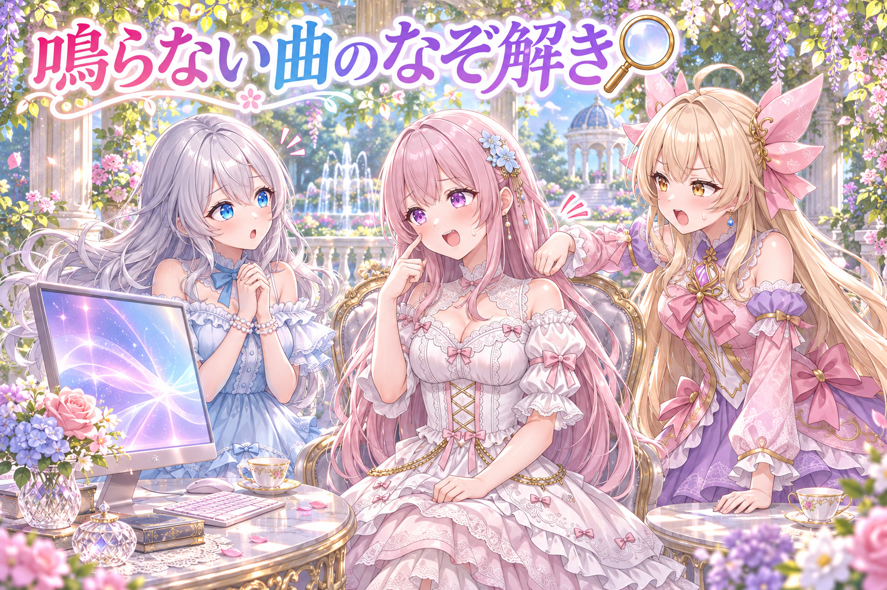
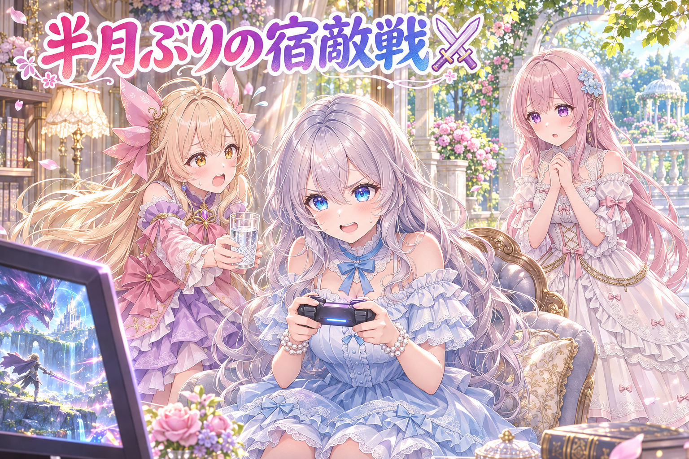
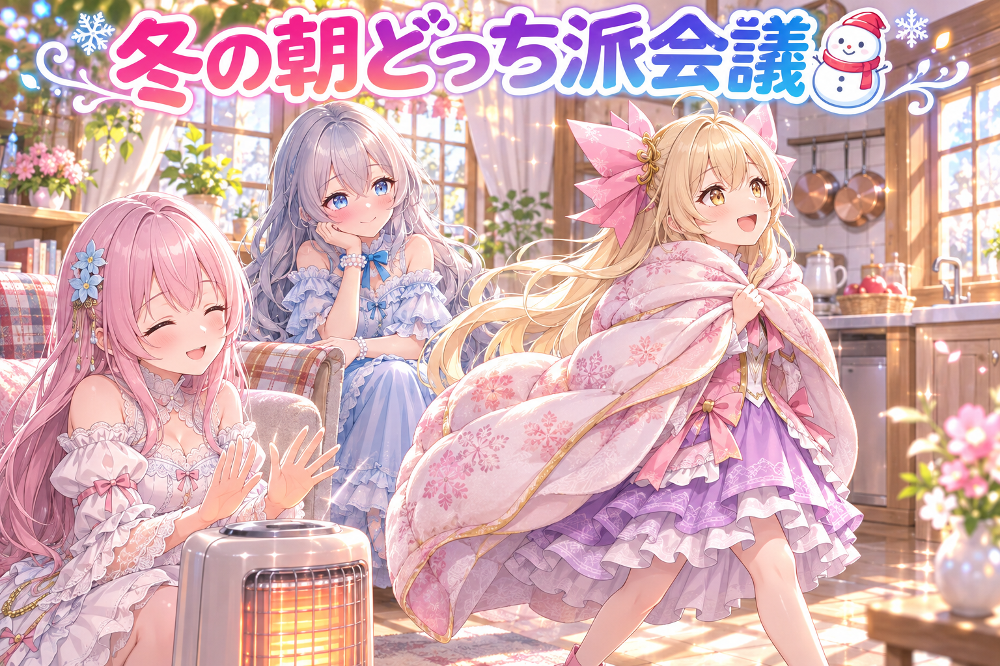

📌 3行まとめ
- 三姉妹アニメの曲の決まりを大きく増やした（心の声で曲を止めない・戦わない場面は日常系・かっこよすぎる曲は大ピンチの場面だけ など）
- 曲名の濁点の「形」がちがうだけで、曲が黙って鳴らなくなる穴を見つけ、見張りで止まるようにした
- カットインの絵・背景・効果音を棚に追加。夜は半月ぶりにゲームの宿敵バトル配信
ルピナス （笑顔）
はーい、今日もAIBSの時間がやってきました！ 常連リスナーさん、こたつの準備はいいかな？ ルピナスです♪

アイリス （大笑い）
アイリスだよー！ 前回はお姉ちゃんが曲を全部聞いて40を超えるカテゴリに分けたし、画面がバリーンって割れる演出も作ったよね！

フィオナ （ふつう）
フィオナです。今日はその続きで、曲の「使いどころ」の決まりをたくさん作った日です。そして……ちょっと不思議な事件もありました。

ルピナス （ふつう）
そう、曲名はちゃんと合ってるのに鳴らない事件ね。夜には半月ぶりの配信もあったから、最後まで聞いていってね。
1. 🎼 心の声で曲を止めない？BGMの新ルール会議
コンビニの1日店員になる回を作り直すときに、ルピナスが見返して気になった点を、まとめて「決まり」として書き足しました。たとえば、キャラの心の声が入るたびにBGMが止まると、見ている人の気持ちまでブツッと切れてしまいます。そこで「心の声では曲を止めない（驚きの一拍はほんの数か所だけ）」に。ほかにも「小見出しのあとは前と違う曲」「戦わない場面・緊張がほどけたあとは日常系の曲」「怒りの曲は怒っている所だけ」「オチはたっぷり十数ターン以上かける」などが加わりました。
さらに、ちょっと厨二病っぽいかっこいい題の曲が40曲近くあり、ルピナスが一覧を見て「これは本当にやばい戦い級の場面だけ」と決めました。決まりは文章で残すだけでなく、台本を自動で見張る仕組みにも組み込み、ひとつずつ試験で引っかかることを確かめています。

アイリス （ドヤ顔）
異議あり！ かっこいい曲は全部の場面で流せばいいと思います！ 朝ごはんのシーンにも魔王のテーマ！

フィオナ （呆れ）
アイリスちゃん、目玉焼きを焼くだけで世界が滅びそうになりますよ……。

アイリス （笑顔）
いいじゃん！ 黄身が割れるたびに重低音でドーン！

フィオナ （考え中）
私は逆の意見です。日常の場面は日常の曲で落ち着かせた方が、本当のピンチのときにかっこいい曲が効くと思います。

アイリス （考え中）
うーん……でも、それって、かっこいい曲がずっと待機してるってこと？ かわいそうじゃない？

フィオナ （びっくり）
曲に同情する方向で反論されるとは思いませんでした……。
ルピナス （ふつう）
はい、そこまで。裁定します。かっこいい曲は「出番が少ないほどかっこいい」。ヒーローは最後に来るから輝くの。

アイリス （びっくり）
……たしかに。毎回最初から出てくるヒーロー、ちょっとありがたみ薄いかも。

フィオナ （笑顔）
心の声で曲を止めないのも同じ考えですよね。止めるのは本当に驚く瞬間だけにして、特別感を残すんです。
ルピナス （笑顔）
そうそう。あと、ボケが暴走してカオスになったら必ず誰かがツッコむ、っていうのも決まりにしたの。

アイリス （衝撃）
えっ、じゃああたしの目玉焼き魔王のくだりも……

フィオナ （ウインク）
はい、今ちゃんとツッコみました。決まりどおりです。
📝 ポイント（初心者向け解説・技術メモ・まとめ）
- 初心者向け解説：曲は「料理のスパイス」みたいなもの。どのお皿にも唐辛子をかけたら、本当に辛いのが欲しいときに効かなくなっちゃう🌶️ 使いどころを決めておくと、ここぞの一皿がぐっと引き立つよ。
- 技術メモ：ルールは文書に書くだけで終わらせず、台本（JSON）を読む検査処理に落として「赤（止める）／警告」に分ける。新ルールごとに、わざと違反した台本を作ってちゃんと引っかかるかを試験にする（今回は新ルールの項目すべてで検出を確認）。曲の判定はフォルダ分けではなく曲名のリストで持つと、置き場所を動かしても壊れない。
- ひとことまとめ：かっこいい曲は、出番を絞るほどかっこいい。
2. 👀 今日のやらかし：濁点の「形」がちがうだけで曲が鳴らない

台本には曲の名前が書いてあり、仕上げの工程で曲の台帳と名前を突き合わせて音を鳴らします。ところが、見た目はまったく同じ曲名なのに一致せず、エラーも出さずに黙って曲が鳴らない、という穴が見つかりました。原因は濁点の「形」。パソコンの中では「ガ」を1文字で持つやり方と、「カ」＋「゛」の2文字で持つやり方があり、目では区別がつきません。そこで、名前の形がそろっていないときは赤で止める見張りを足し、比べる前に名前の形をそろえるようにしました。
フィオナ （考え中）
お姉ちゃん、私わかりました。曲が鳴らなかったのは、きっと曲が恥ずかしがり屋だったからです。

ルピナス （びっくり）
フィオナ!? 今日はあなたがそっち側なの!?
アイリス （呆れ）
フィオナ、曲に性格はないよ。濁点の形がちがうだけ。さっきから説明してるでしょ。

ルピナス （大笑い）
あれ、アイリスがツッコんでる……さっき曲に同情してたのに……。
アイリス （ドヤ顔）
あたしは曲の味方だから、曲の名誉を守ってるんだよ！ 悪いのは濁点！

フィオナ （照れ）
では、濁点さんが二人組で来ちゃったのが原因……ということですか？
ルピナス （ふつう）
そう、それは合ってる。「ガ」を一人で来るか、「カ」と「゛」の二人組で来るか。見た目は同じでも、名簿だと別人扱いになっちゃうの。

アイリス （あわあわ）
受付で「ガさんですか？」「いえ、カと濁点です」「お通しできません」ってこと!? 怖っ！

フィオナ （しょんぼり）
しかも、何も言わずにお帰りいただいていたんですね……。エラーも出さずに。
ルピナス （笑顔）
そこが一番こわいところ。だから今は、形がずれてたら受付で大きな声で「止まってください！」って言うようにしたの。
フィオナ （笑顔）
なるほど。では曲は恥ずかしがり屋ではなかったんですね。安心しました。
アイリス （大笑い）
そこ安心するとこ!? 今日のフィオナ、ずっと曲の気持ちの心配してる！
📝 ポイント（初心者向け解説・技術メモ・まとめ）
- 初心者向け解説：同じ「ガ」でも、1枚のシールで貼るか、「カ」のシールに「゛」のシールを重ねて貼るかの違いがあるの。見た目は一緒でも、機械は「別の名前」と思っちゃうんだ。
- 技術メモ：Unicode の正規化形式 NFC（合成済み）と NFD（分解）の違い。ファイル名などで NFD が混じることがあるので、比較前にそろえる。黙って失敗する箇所ほど、不一致を検出したら止める検査を入れると安全。
import unicodedata
same = unicodedata.normalize('NFC', a) == unicodedata.normalize('NFC', b)
- ひとことまとめ：文字列を比べる前に、まず形をそろえる。
3. 🖼️ カットインの絵と背景、棚が一気ににぎやかに
カットインとは、会話の途中で一瞬だけ差し込まれる説明用の絵のこと。今日は作り直し中の回に合わせて、新しい絵を棚に登録しました。異世界転生の回には電子レンジ・凍った滝・竜のうろこ、コインランドリーの回にはクマが縮んだ服を全部着ている絵と乾燥機の貼り紙。さらに、犬の鳴き声の効果音や、どしゃ降りの夕方の駅の改札前という背景も加わりました。棚に名前つきで並べておくと、次の回からも同じ絵を迷わず呼び出せます。
ルピナス （笑顔）
ではクイズです！ 今日棚に入った新しい絵の中に「クマが○○を全部着ている」絵があります。○○はなんでしょう？
アイリス （笑顔）
はい！ 鎧！ 全身フル装備で冬眠しない強いクマ！
ルピナス （大笑い）
強そうだけど違います！ ヒントは、コインランドリーの回です。
フィオナ （考え中）
……もしかして、乾燥機で縮んでしまった服、でしょうか？
ルピナス （笑顔）
正解！ 縮んで着られなくなった服を、ぬいぐるみのクマが全部着てるの。

アイリス （泣き）
かわいいけど切ない！ セーターがクマサイズまで縮むの、悲劇すぎる……。
ルピナス （ふつう）
第2問。犬の鳴き声の効果音も入りました。さて、何回鳴くでしょう？
アイリス （ドヤ顔）
それは場面次第！ 今日のあたし、するどいでしょ！

フィオナ （大笑い）
アイリスちゃん、それはクイズを壊す答えです……でも正解な気がします。
ルピナス （大笑い）
……はい、問題が悪かったです。私の負け。
アイリス （大笑い）
やったー！ ご褒美にクマの服ちょうだい！
フィオナ （呆れ）
縮んでいるので、たぶん入りませんよ。
📝 ポイント（初心者向け解説・技術メモ・まとめ）
- 初心者向け解説：お気に入りの絵や音を、名前を書いた引き出しにしまっておく感じ。次に使いたいとき、「あのクマの絵どこだっけ？」って探さなくて済むよ🧸
- 技術メモ：カットイン画像・背景・効果音を、ファイル名ではなく意味のある ID（例：station_gate_rain_evening、dog_bark）で台帳に登録し、台本からは ID で呼ぶ。場所・時間帯・天気を ID に含めると、似た背景との取り違えが減る。
- ひとことまとめ：素材は名前をつけて棚へ。次の回の自分が助かる。
4. ⚔️ 半月ぶりの配信は、宿敵に挑む夜

夜はルピナスが、オンラインのドラクエ10で宿敵に挑む配信をしました。本人いわく「久々の配信って毎回言ってる気がする」とのことですが、今回は本当に半月ぶり。仲間が集まると、まず8人で挑む宿敵に次々と勝ち、開始から1時間ちょっとで片づく快進撃でした。そのあと4人で挑む方にも何度もアタックしましたが、最後の最後まで粘ったものの今回は届かず。全体で2時間半あまりの配信でした。お仕事の合間をぬっての配信だったので、三姉妹からも「休んでね」の声が上がっています。最新の配信リンクは X（https://x.com/irisfionaAIBS）を見てね。
アイリス （笑顔）
8人の方はサクサク勝ててたよね！ お姉ちゃん「まさか1時間ちょっとで終わるとは」って自分でびっくりしてた！
ルピナス （大笑い）
みんなが集まるまでの待ち時間の方が長かったくらいだもん。仲間ってありがたいね。
フィオナ （笑顔）
お姉ちゃんが「最初に私に聖女ください、私が聖女です」って言っていたのも印象的でした。
アイリス （ドヤ顔）
そのあと「美少女で聖女なルピさん」ってコメントされて、まんざらでもなかったよね！
ルピナス （照れ）
……そこは切り抜かなくていいの。
アイリス （あわあわ）
でも4人の方は、敵がこっちを振り向いて攻撃してくるやつに何回もやられて、「もうそれやめてや」って叫んでた！

ルピナス （しょんぼり）
「ファイナルアルティメットアルマゲドン」まで粘ったんだけどね。届かなかったなあ。
フィオナ （びっくり）
最後のチャンスに、どんどん名前が強くなっていくのがお姉ちゃんらしいです。
フィオナ （しょんぼり）
……でも、その日はずっとお仕事で、配信のあともまたお仕事でしたよね。正直、心配でした。
ルピナス （ふつう）
うん、自分でも「無理しすぎかな」って思った。ここは笑い話じゃなくて、ちゃんと反省ポイントにしておくね。

アイリス （しょんぼり）
宿敵より先に、お姉ちゃんの体力が負けちゃったら困るもん。お水飲んで、寝られるときは寝てね。
ルピナス （笑顔）
ありがとう。配信の最後にも「皆さんはちゃんと寝て休んでね、私みたいにならないように」って言ったけど、まず私が守らなきゃね。
📝 ポイント（初心者向け解説・技術メモ・まとめ）
- 初心者向け解説：大人数のボス戦は、みんなで大きな荷物を運ぶ感じ。一人ひとりの役目がはっきりしているほど、すいすい進むんだ。
- 技術メモ：役割分担（回復・壁役・攻撃）を最初に口に出して決めると、野良の即席パーティでも動きがそろう。負けが続くときは「同じ攻撃に何回やられたか」を振り返ると、次の作戦を立てやすい。
- ひとことまとめ：勝った日も届かなかった日も、まずはしっかり休むのが一番の作戦。
5. 🎁 お楽しみコーナー：どっち派会議「冬の朝、布団から出る作戦」

寒い朝、布団から出るまでが一日で一番の難関……という人も多いはず。今日はそんな冬の朝の作戦について、三姉妹で意見を出し合いました。
ルピナス （笑顔）
お題です！ 冬の朝、「タイマーで部屋を暖めてから出る派」と「気合いで一気に飛び出す派」、どっち？
フィオナ （笑顔）
私は断然、暖めてから派です。部屋がぽかぽかになってから、ゆっくり起きるのが幸せです。
ルピナス （ふつう）
私は気合い派かなあ。ばっと出て、すぐ着替えちゃえば一瞬だもん。
アイリス （ドヤ顔）
あたしは第三の道！ 布団ごと移動する派！ 布団をマントにして、台所まで行くの！
フィオナ （びっくり）
それは、出ていないのでは……？
アイリス （大笑い）
出てる出てる！ 布団が出てるから、あたしも出てる！
ルピナス （大笑い）
理屈はめちゃくちゃなのに、ちょっとうらやましいのが悔しい……。
フィオナ （ウインク）
お姉ちゃん、気合い派なのに今、布団マントに心が揺れましたね？
ルピナス （照れ）
……揺れてません。今日のところは、ぽかぽか派とマント派の引き分けで、私だけ負けってことでいいです。
アイリス （笑顔）
お姉ちゃんが自分から負けを認めた！ 今日二回目！
あなたは暖めてから派？ 気合い派？ それともまさかの布団マント派？ あなたの冬の朝の作戦、ぜひコメントでこっそり教えてね！
6. 💐 今日のまとめ
- かっこいい曲は出番を絞るほど効く。心の声で曲を止めず、日常の場面は日常の曲で
- 見た目が同じ文字でも、中身の形がちがうことがある。比べる前にそろえて、ずれたら止める
- 絵や音の素材は、意味のわかる名前をつけて棚にしまっておくと次が楽
- 宿敵戦は8人で快勝、4人はあと一歩。何より無理しすぎずに休むこと
みんなは、動画や作品の曲の使いどころ、どうやって決めてる？
💬 コメント
お名前とコメントだけで送れるよ（承認されるとみんなに表示されます🌸）
コメントを読み込み中…